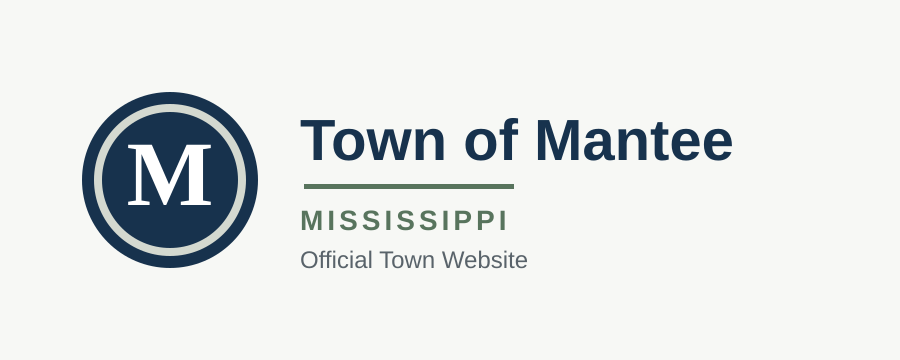
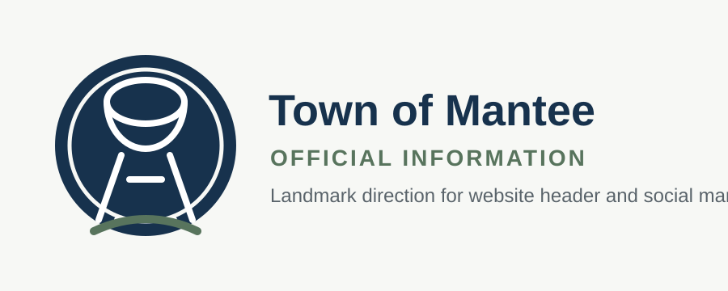
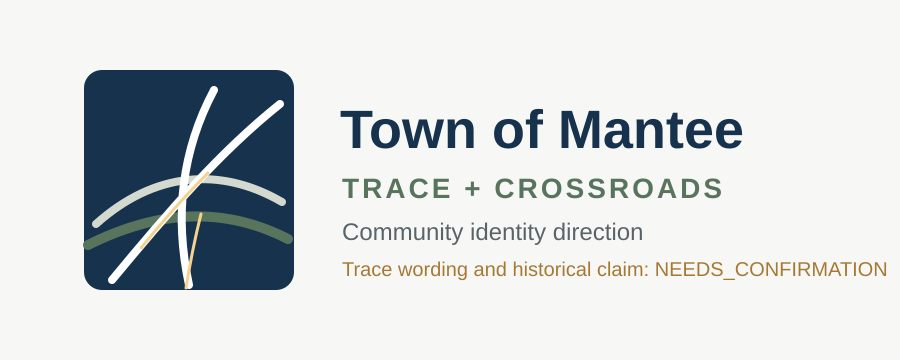
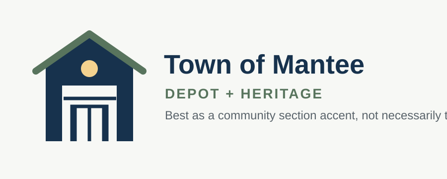
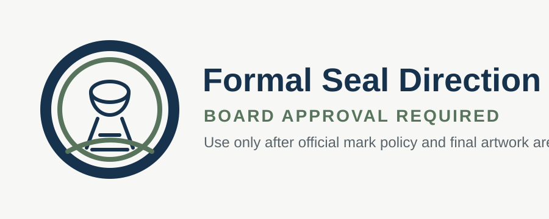

Nearby Mississippi Sites
Eupora, Mathiston, and Houston lean on familiar municipal template structure. Eupora feels the closest to the target because it mixes local identity with functional civic navigation.
Draft Board Review
These are non-final visual directions for discussion only. They are not approved Town seals, trademarks, or final production artwork.
Reference Scan
The strongest pattern is to separate the website identity from a formal seal. A readable wordmark and simple local mark can launch now, while a permanent seal or detailed official logo can be approved later.
Eupora, Mathiston, and Houston lean on familiar municipal template structure. Eupora feels the closest to the target because it mixes local identity with functional civic navigation.
Stronger civic systems usually keep a simple logo, clear wordmark, and documented usage rules so the site, documents, and social graphics stay consistent.
Mantee has usable visual anchors already: water tower, crossroads, Depot, museum, and the local welcome sign. The first logo should not try to include all of them.
Concept Set
React to overall fit and usefulness. Exact artwork, symbol proportions, wording, and colors can be revised after a direction is selected.

Concept A

Concept B

Concept C

Concept D

Concept E
Header Fit
The header needs a mark that stays legible, compact, and official on desktop and mobile. These mockups preserve the current navigation structure.
Text-first mark. Best when clarity and low approval risk matter most.
Water tower mark. Best local identity fit with current photography.
Trace/crossroads mark. Strong local story, but it needs fact review.
Depot/heritage mark. Better for community identity than official records.
Recommendation
Use Concept A or B for the first website launch. Both are clean enough for managed WordPress and do not require a complex seal approval process.
Concept B, Water Tower Landmark, is the strongest local fit if the board wants a recognizable Mantee identity from day one.
Concept E should wait until the Town wants a formal seal policy, final vector artwork, and documented logo usage rules.
Next Review Questions